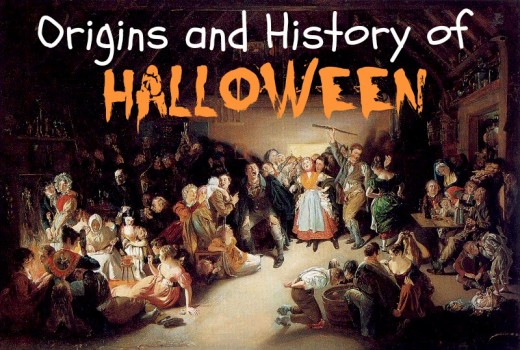

HISTORY OF HALLOWEEN

The word Halloween dates back to 1745. The word Halloween meant that holy night. It comes from a Scottish term for All Hollows' Eve.
Halloween according to the traditional theory has its origin with the well-known as Samhain that derives from the old Irish and means final of summer. Samhain celebrates the end of the harvest season in the Celtic culture and was considered the new year that began with the dark season. During the period in which the pagan festivals prevailed, the popes sought Christianization.
During the 1840 he arrives in the United States and Canada, where he is deeply rooted, as Irish immigrants are transmitted during a great amber. But the party did not begin to celebrate massively until 1921.
Halloween's internationalization reaches the end of the 70s and early 80s thanks to the cinema and series. Today Halloween is one of the most important dates in the US and Canadian celebration calendar. Some Ibero-American countries have their own traditions and celebrations here the same day but they conceive in terms of meaning. In Europe there are many cities that have adopted this celebration.